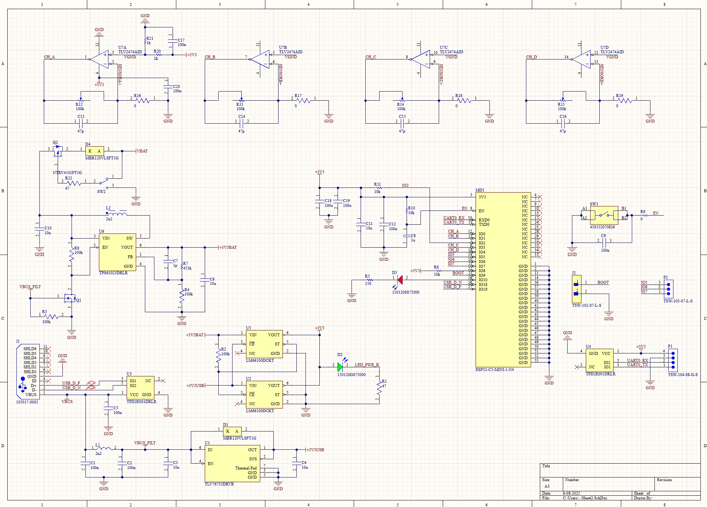
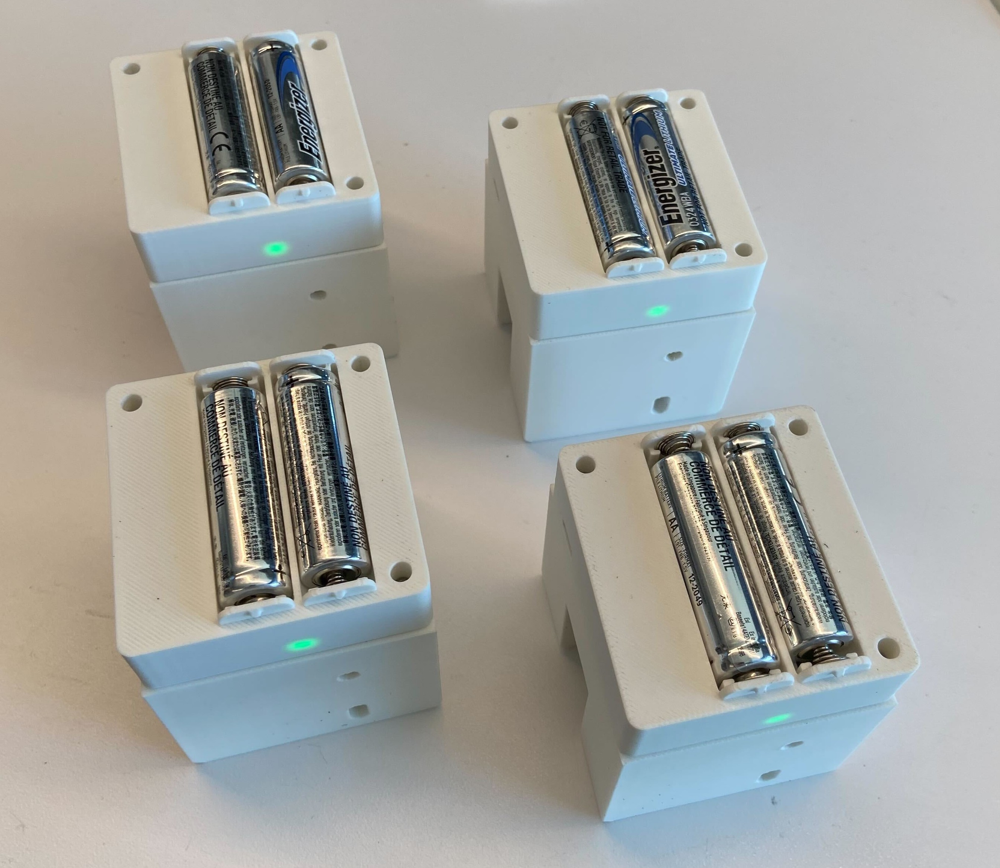
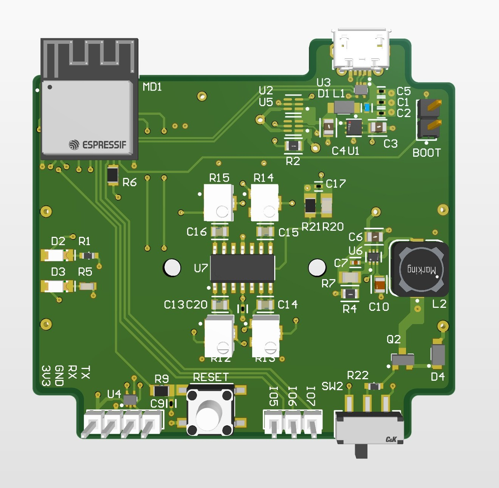
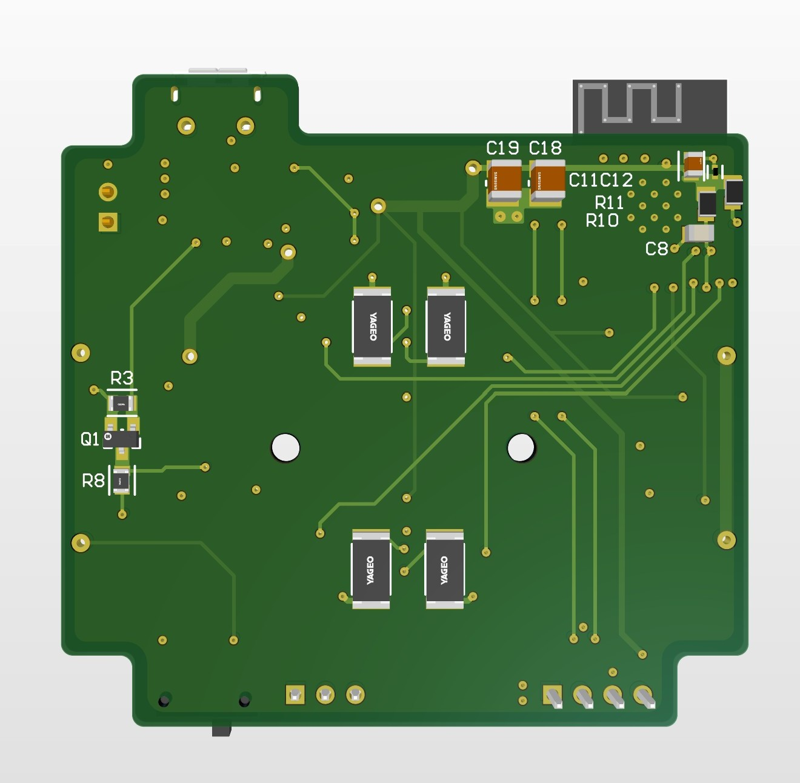
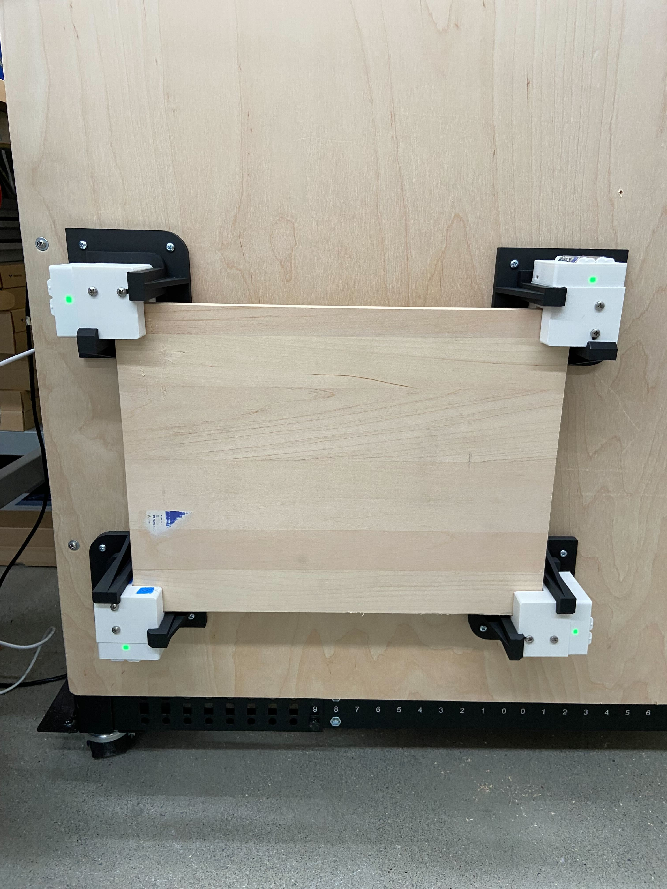
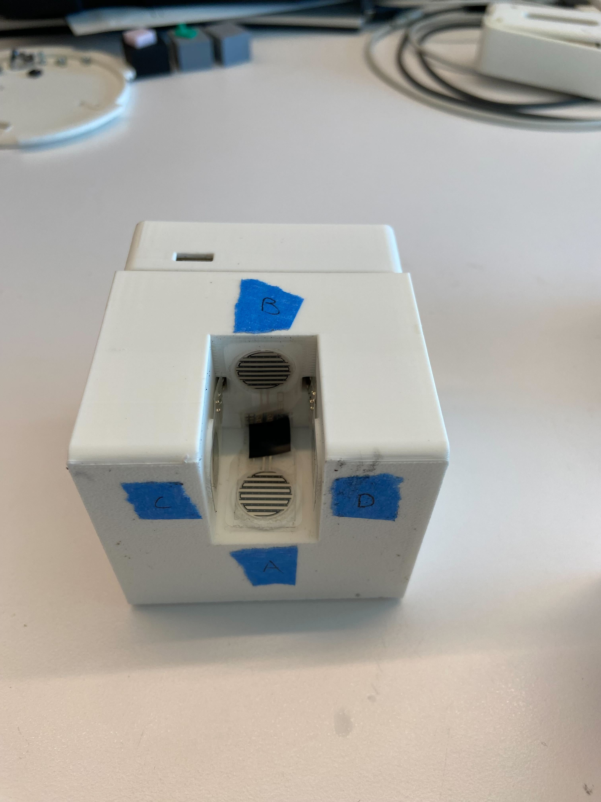

Schematic
The power circuits are on the left, the AFE is at the top, and the ESP32 with peripherals is on the right.
My goal for this project was to design a modular device that could be used to measure forces on wall-mounted products. Each unit clamps one corner of the test jig, with 4 sensors in each unit. This configuration of the sensors allows the AllSparks to measure forces normal to the jig (1 axis), shear forces (2 more axes), and torque in all three axes.
The project can be broken down into the following categories:
I designed a custom 4 layer PCB for this project around an ESP32-C3-MINI-1-N4. The PCB runs on x2 L91 batteries under normal operating circumstances, but can also be powered over micro USB, which is also the primary flashing method. The board features a single-supply AFE, and power miltiplexing to select between power inputs. I spent a lot of time checking the design guidelines in the ESP32 datasheets to get good RF performance and signal integrity. The mechanical design required a lot of thought, creativity, and research to come up with the high-level architecture. The approach that this design takes is not conventional, but I wanted a solution that was modular and unique. The mechanical assembly for each unit has four 3D-printed parts, and each unit is designed to withstand 100 lbs, which aligns with the sensor range. The system as a whole can then measure up to 400 lbs. The software enables wireless data transmission from multiple ESP32 devices to a host computer via Wi-Fi using WebSockets. Each ESP32 reads analog sensor data, packages it into JSON, and transmits it to a Python-based GUI running on the laptop. The GUI processes the data and displays key metrics in real time. The host-side software has multi-client support so that you can connect the whole system, and you can calibrate from the host after the hardware is setup. Please see the github repo for full details.
AllSpark was successful in characterizing wall-mounted product performance in my testing. One drawback was that calibrating could be difficult because if the setup flexed, then the jig was not parallel to the sensors anymore. I designed another part to mitigate this issue, but I still had to be mindful of it when using the setup because the jig (3/4" plywood) flexes differently depending on where you apply force.

The power circuits are on the left, the AFE is at the top, and the ESP32 with peripherals is on the right.

Full set manufactured.

Render of the PCB top.

Render of the PCB bottom.

This image shows the working setup. You mount the device that you want to test to the plywood jig, and the units will transmit the sensor values, which get processed and displayed on the host.

Sensor interface.